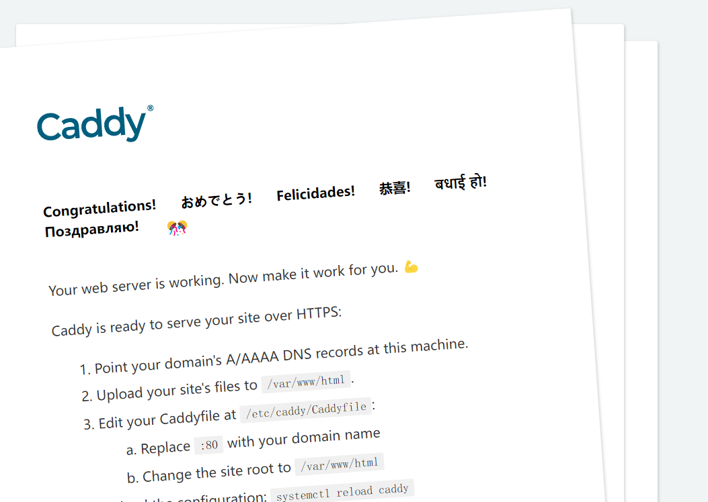
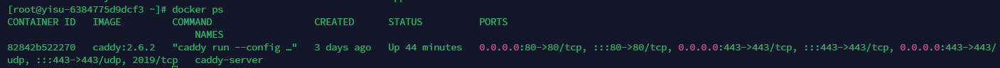
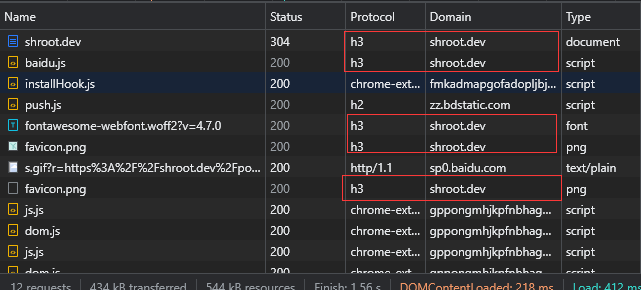
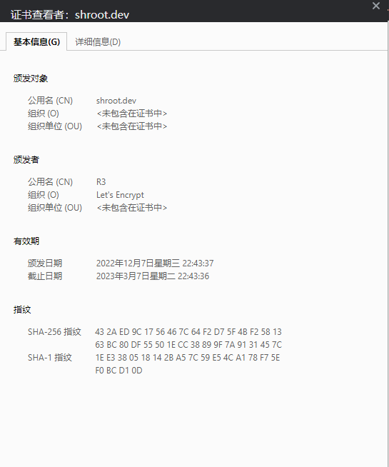

使用caddy2,docker-compose快速部署一个自带TLS和HTTP3的网站
2022-12-11 Yazzyk使用背景
发现Caddy是我刚刚将博客换了个服务器，一时兴起，听闻IETF已经在今年(22年6月)推出了正式版HTTP3(RFC9114),那就干脆使得博客支持上，但找了半天，基于nginx都没有一个简单的方案，都是要去编译nginx-quic然后修改配置文件,看着就感觉好麻烦，也没有找到合适的docker来支持，弄完还得去弄证书来开启https。偶然间又看到一篇文章利用Caddy轻松HTTPS，支持HTTP3/QUIC,然后查了一下，发现caddy这个web服务器已经是默认支持HTTP3了，而且还可以自动去生成TLS证书，自动开启https，官方支持docker，那不快乐起来了吗！
简介
Caddy是一款用Golang编写的开源的web服务器，相比于Nginx来说有着以下优点
- 可自动获取TLS证书
- 自动续签证书
- 默认支持HTTP3(RFC9114)协议
- 配置文件简单易上手
docker-compose.yml
|
|
创建一些映射出来的文件和文件夹
在docker-compose.yml同目录下
|
|
编辑Caddyfile(当然，也可以启动docker容器后copy出来)
|
|
简单说下配置文件
:80是caddy自带的一个页面,如下图
shroot.dev是我的域名，当然，:80也是域名,从文档来看，Caddy对域名的格式要求并不严格root * /srv/shroot.dev是网站根目录指向的/srv/shroot.dev这个路径，*是站点匹配路径,可以参考文档,注意这个路径是docker容器内的，这个路径通过docker-compose被我们映射到了site目录下file_server说明这是一个静态文件服务器，我们可以通过请求URI路径来访问站点，可以参考文档encode是响应编码，典型用途是压缩，具体使用可参考文档- 下面的
www.shroot.dev下我使用了redir将www.shroot.dev这个域名重定向到了shroot.dev
以上我们就配置好了，接下来只需要将构建好的网站放入site/shroot.dev目录下,然后执行docker-compose up -d即可
https和http3不需要任何的配置，caddy默认支持并开启，并且会自动跳转到https，我们只需要检查服务器的防火墙是否开启80和443端口，注意443端口是tcp和udp都打开，http3使用的是udp
检查
docker ps检查容器是否运行正常

访问域名检查是否开启https和http3,如果Chrome没有Protocol，可以在Name那里鼠标右键勾上Protocol即可


如果在https://http3check.net/和https://geekflare.com/tools/http3-test检查说网站不是Http3的话，其实可能是检查的网站协议不是最新的,而caddy已经不支持旧版的草案了，参考v2.6.0: HTTP/3 fails test on http3check.net #5069
- 本文链接： 使用caddy2,docker-compose快速部署一个自带TLS和HTTP3的网站
- 版权声明： 本作品由Yazzyk采用知识共享署名-非商业性使用 4.0
国际许可协议进行许可。
基于Yazzyk's Blog上的作品创作。转载请注明出处！